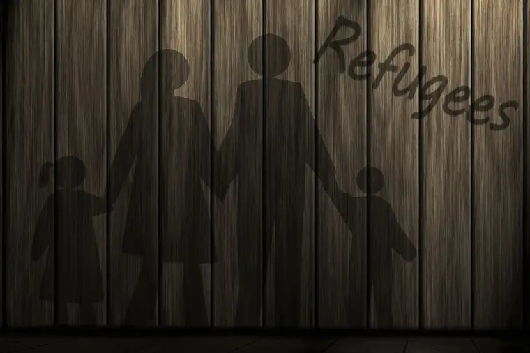

As they made their way across the street toward our state’s only abortion facility, I noted his strong grip on the car seat that hung between them, with its baby-patterned blanket, along with their colorful clothing and raven hair.
Questions immediately arose in my mind. Why are they coming here? They’re already parents, right? Surely, they understand the gift they will lose if they continue in this direction?
I knew I had to risk trying to talk with them; to correctly determine my suspicions about why they’d come Downtown Fargo on a Wednesday – abortion day – and, if possible, offer them an out.
It was the longest I’d ever conversed with anyone at the site where we pray each week in the hopes of redirecting those reeling to another, more hopeful place. Surprisingly, they were open, willing to give me some time, there on the curb.
Behind us, the facility loomed large. I knew each second, each word, would count.
I told them about our local pregnancy help clinic. I reminded them of the treasure of life. They nodded, and in broken English, assured me, “We don’t want to do it.”
“And you don’t have to,” I said, suggesting they consider dropping this appointment, and taking time to think things through with the guidance of those ready to lovingly assist them. I assured them they’d receive help to avoid a regrettable end.
As I touched the mama gently on the shoulder, mother to mother, I told her I love her. “I know you do,” she said, looking directly into my eyes.
Just then, the tall, male escort behind intervened. “Don’t touch her,” he snapped.
“It’s okay,” she replied softly. “I don’t mind.”
In a short amount of time, she’d sensed my sincerity; I’d earned her trust. My heart sprang alive with hope.
But I’ll admit, too, that the amount of energy consumed in these tense situations, when life and death sway together, is incredible. There is no perfect script, and the weight of each word hangs heavy.
Will the right words bring life? Will the wrong words hasten death?
I did my best, but at some point, the escorts summoned us away from the curb; it was too dangerous, they said.
But the danger had just begun. As if a vacuum had been in wait behind us, with them positioned just a few inches closer to the door now, the traction was powerful enough to snatch them into its dark portal, body and soul.
As the sweet trio disappeared inside, my heart sank. I felt stunned, frozen, depleted. I’d come so close, but evil had won.
Playing the situation over again later in my mind, I recalled how, at one point in the conversation, they’d said, “We don’t want to, but we have to.” I sensed as they spoke that another force beyond them was at play.
I don’t believe they wanted this, either, but am guessing that someone else had convinced them it was imperative and even, perhaps, paid for the dirty deed.
Since that sad day, I’ve noticed more and more “sidewalk victims” who are either immigrants or refugees. These “New Americans” seem particularly vulnerable, having arrived in a foreign place where they may be pressured to cave to the demands of a new life to get ahead — even if it means killing their offspring.
It’s likely not an ideal they’d brought from their country of origin, but one they’ve been forced to believe is part of their initiation into this new world.
My heart breaks each time another abortion-vulnerable woman clearly new to our country enters the sidewalk, ready to surrender her child for the promise of the American Dream.
It horrifies me to think of the dichotomy between our Catholic ideal of welcoming the stranger, and the Culture of Death that simultaneously awaits these dear ones who’ve come here with hopes, only to learn this is the god-awful price they must pay.
I don’t know the statistics, but we’re seeing more each week, and it seems a supreme injustice. By coercing New Americans to exchange their children for a chance at “freedom,” we are gravely culpable.
I offer this all-too-real scenario as a point of pondering, and an appeal for prayer. Welcoming the immigrant seems a cruel joke if we, in the same breath, lead them to annihilate their young.
May we who have eyes to see greet our brothers and sisters from other lands, not with death, but with faith in the living God, and the hope that we, too, have been offered, for life.
[Note: I write about my experiences on the sidewalk Downtown Fargo on Wednesday, the day abortions happen at our state’s only abortion facility, for New Earth magazine — the official news publication of the Fargo Diocese. I hope you find “Sidewalk Stories” helpful in understanding the truth about abortion and how it plays out tragically each week here in Fargo, N.D. The preceding ran in New Earth’s July 2017 issue.]